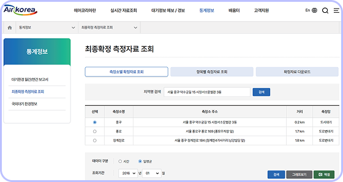

창의∙융합 프로젝트
초미세 먼지 농도는 얼마일까?
데이터 수집하기
문제 해결을 위해 필요한 데이터를 수집해 보자.
예시
-
1. 우리 동네 공기질에어코리아(https://www.airkorea.or.kr)에 접속하여 우리 동네의 코로나바이러스감염증 이전(2016~2019년) 일평균 데이터를 연도별로 내려받은 다음 한 개의 파일로 합친다.
-
2. 우리 동네 기상기상자료개방포털(https://www.data.kma.go.kr)에 접속하여 우리 동네 평균 기온, 평균 풍속, 최다 풍향, 이슬점, 평균 상대 습도, 평균 현지 기압, 가시거리 데이터를 내려받은 다음 한 개의 파일로 합친다.